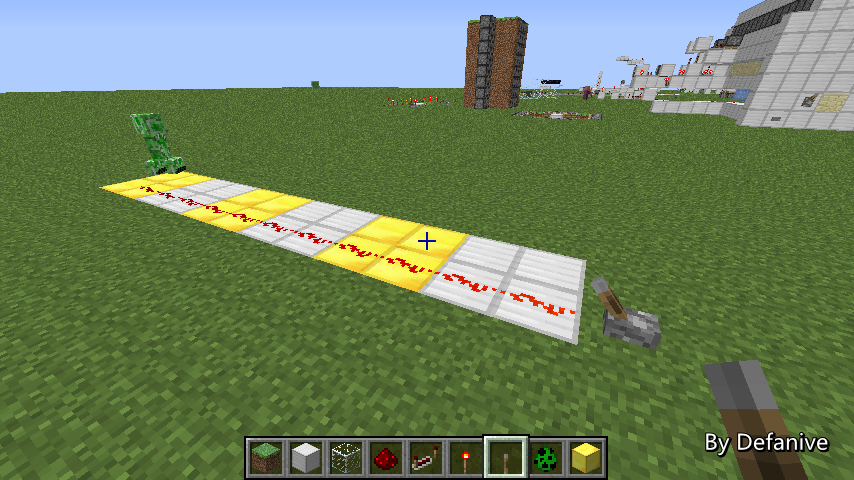

Panda4994利用inactive loaded chunk做了一个和平模式按钮
一旦按下按钮之后整个世界都会变成和平模式
当在很远的一个未加载chunk中积累了80个怪物之后
通过特定方法不远离怪物卸载掉这些chunk
例如通过死亡，或者通过地狱门传送
那么这个未加载的chunk里面就会有80只怪物
接下来通过产生更新吧这个chunk进行inactive加载
那么这80只怪物就会积累到刷怪上限，不再刷怪
PS 为什么是inactive而不能是active呢
因为inactive加载不会对entity产生更新
因此这些怪物就不会消失，继续积累在上限中
而active加载则会对entity产生更新，使怪物消失
——来自 MCLive

20524楼
2013-08-03 10:59